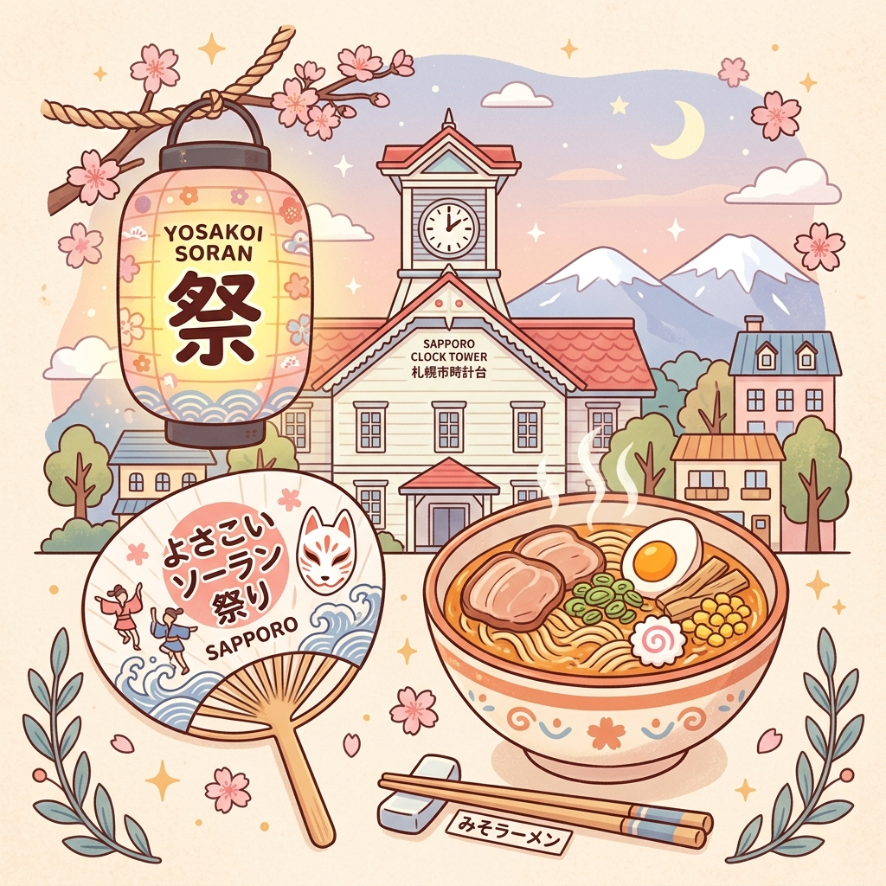
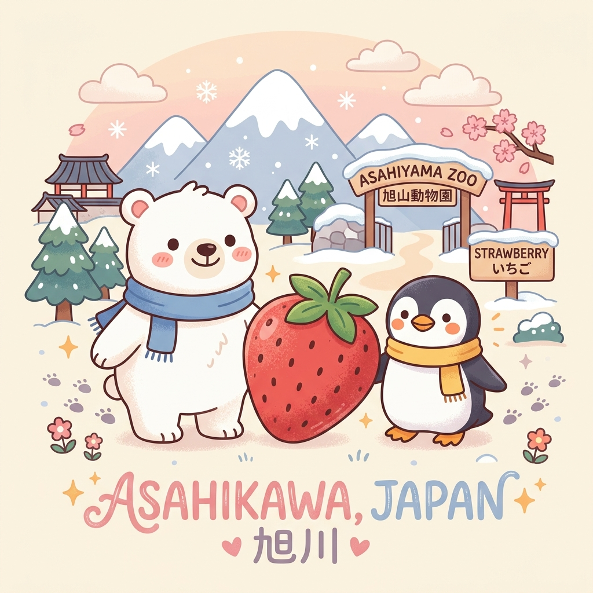
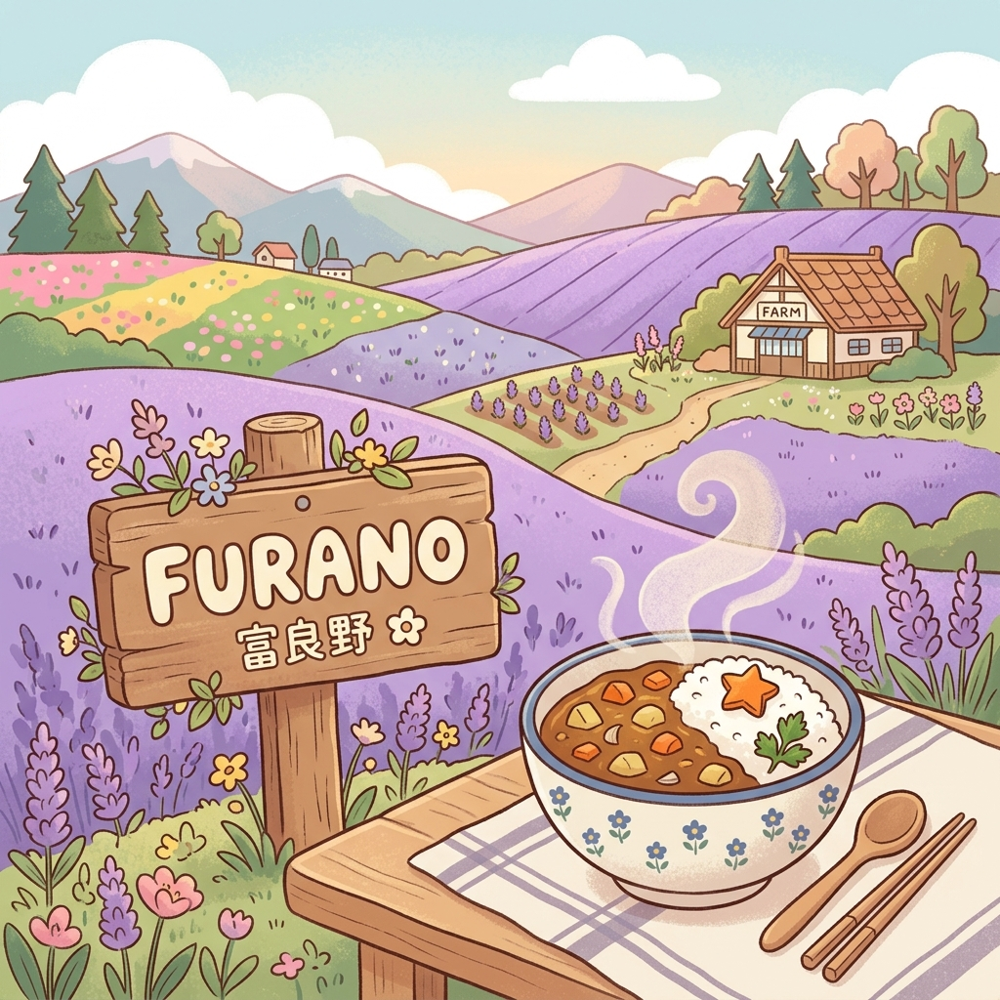
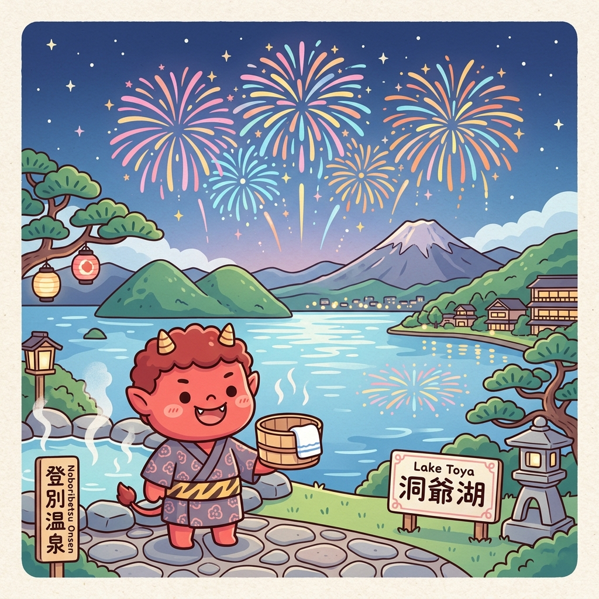
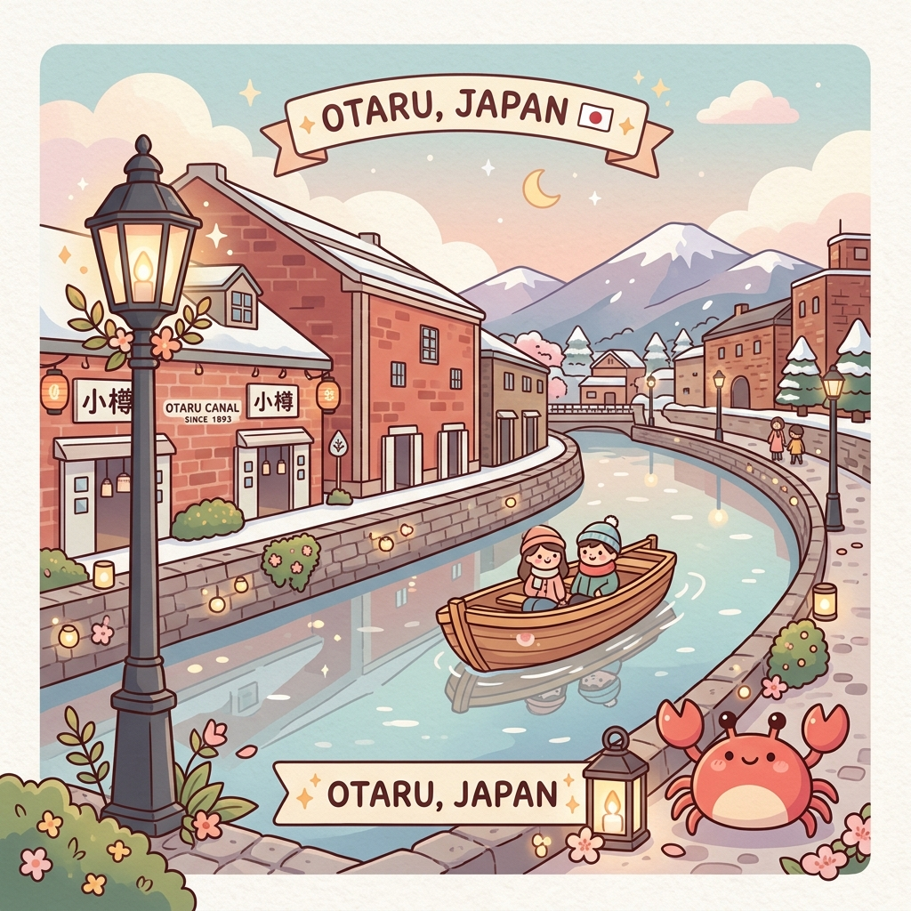
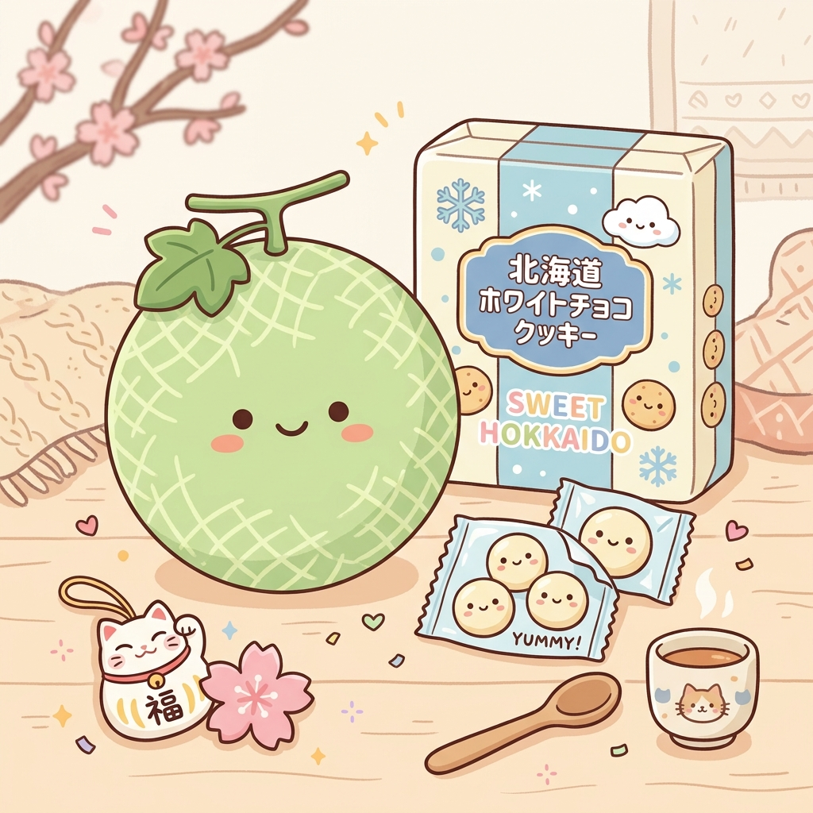

行程速覽
飯店訂房明細
出發前待辦 & 必備物品

Day 1：抵達北國 ➔ 狂歡索朗祭 🏮
乘著夜色抵達札幌，步行前往大通公園感受北海道初夏最熱血的 YOSAKOI 索朗祭封街慶典！
新千歲機場 ➔ 札幌站 (JR 快速 Airport 號)
搭乘 19:06發車 ➔ 19:44抵達 或是 19:18發車 ➔ 19:56抵達 的班次前往札幌站。
札幌埃米恩飯店辦理入住 地圖
抵達札幌站後，步行至飯店放置行李並辦理 Check-in。
步行參戰「YOSAKOI 索朗祭」🏮
從飯店步行約 10 分鐘即可抵達大通公園會場。初夏的大通公園將化身為熱情的街頭舞台，舞者踩著動感節奏跳著傳統與現代結合的舞步！
- 主舞台會場： 大通公園西 8 街會場 (演出時間至 21:30)
- 北之食品公園： 大通公園西 5 街和 6 街會場，匯集北海道各式在地美食攤位，可以一邊吃烤海鮮、喝啤酒一邊看表演！

Day 2：自駕啟航 ➔ 美妝旗艦、企鵝漫步與燒肉盆地夜景 🐧
今日開啟自駕之旅！從札幌向北出發，造訪超人氣美妝總店，下午近距離親近可愛北極熊與企鵝，傍晚體驗鮮甜草莓狩，最後以美味燒肉與百萬夜景完美收尾！
札幌站取車出發 地圖
至 AVIS Budget Rent a Car 札幌駅前北口店 辦理取車手續，開始我們的自駕自遊！
SHIRO 砂川本店 💄 地圖
日本超紅天然系美妝品牌 SHIRO 的全日最大旗艦店，建築簡約絕美。店內不僅能買到限定美妝，還有香氛手作工坊與嚴選當地食材的 SHIRO Cafe，是個拍美照兼補貨的好地方（車程約 1.5 小時）。
旭川拉麵村享用拉麵午餐 🍜 地圖
開車續行 45 分鐘抵達旭川。在此集結了旭川最知名的 8 家拉麵店（如梅光軒、青葉等），一次滿足對濃郁醬油拉麵的渴望！
旭山動物園 🐻❄️ 地圖
全日本最受歡迎的動物園！獨特的「行動展示」設計讓你可以看見企鵝水中飛翔、北極熊巨大躍水、海豹在垂直玻璃管穿梭。非常療癒！
貼心小提醒： 正門口的官方停車場是「免費」的喔！別停到旁邊的私人收費停車場。
旭川民宿辦理入住 🏡
抵達旭川民宿 Harry's Ski House ASAHIKAWA 辦理 check-in 並稍作休息。
燒肉 わじま (Yakiniku Wajima) 🥩 地圖
精選當地上等肉品，炭火燒肉香氣撲鼻，慰勞一整天開車的辛勞！
嵐山展望台：飽覽旭川盆地百萬夜景 🌌 地圖
開車 20 分鐘上山。嵐山展望台能俯瞰整個旭川盆地的璀璨燈火，清涼的夏夜配上點點繁星，氣氛浪漫至極！

Day 3：拼布之路 ➔ 彩虹花田 ➔ 唯我獨尊咖哩與悠閒富良野 🌸
進入美瑛與富良野的核心景致！行經如畫的丘陵，造訪最著名的富良野富田農場，品嚐超人氣日式咖哩，入住幽靜的瀾山酒店。
亞斗夢之丘 / 北西之丘展望公園 📷 地圖
開車 20 分鐘抵達美瑛丘陵。北西之丘有一座金字塔型的展望台，能 360 度眺望美瑛遼闊的丘陵拼布風光。初夏時分，農田黃綠交錯，隨手拍都像明信片！
四季彩之丘 🚜🌈 地圖
開車 11 分鐘。四季彩之丘是美瑛最具代表性的花田，數十種花卉如彩色地毯般沿著山丘起伏，極具視覺震撼力。可以搭乘可愛的拖拉機巴士逛園區！
Herb Garden Furano 或是 唯我獨尊日式咖哩 🍛 地圖
在花田包圍的 Herb Garden 享用自助餐，或是排隊品嚐富良野的傳奇排隊美食「唯我獨尊」黑咖哩，搭配自家製香腸與新鮮蔬菜，香濃開胃！
富田農場 (Farm Tomita) & 薰衣草精油工廠 💜 地圖
日本薰衣草觀光的發祥地！漫步在紫色薰衣草花田中，空氣中瀰漫著溫和的花香。別忘了參觀全日本唯一的薰衣草蒸餾工廠，並且買一支招牌的薰衣草霜淇淋 🍦 拍照打卡！
富良野農夫市集 Furano Marche 🛍️ 地圖
富良野地區最大的在地物產館，集合了當地的農特產品、伴手禮、起司、現烤麵包及甜點，是採購富良野伴手禮與品嚐小吃的好地方！
開車前往占冠停車區 ➔ 飯店 🚗
行經占冠休息區休息，預計 18:00 左右抵達飯店辦理入住。
入住瀾山酒店 (Lanshan Hotel Furano) 🏨 地圖
入住溫馨舒適的瀾山酒店。大廳一樓往後走備有洗衣房，方便清洗前幾日的衣物。

Day 4：溫馨牧場 ➔ 三井Outlet狂購 ➔ 地獄谷震撼 ➔ 洞爺湖煙火會席 🎆
從農場體驗出發，中午在北海道最大 Outlet 享受購物與美食，下午走訪煙霧繚繞的地獄谷，晚間入住洞爺湖溫泉飯店，欣賞湖畔施放的絢爛花火！
箱根牧場：綠意與向日葵花海 🌻🐮 地圖
開車 20 分鐘抵達箱根牧場。這裡引進有機栽培和天然飼育，在寬廣的草原中能看到悠閒的乳牛。初夏時分更有耀眼的向日葵田，是體驗北海道大自然魅力的好去處。
三井 OUTLET 札幌北廣島 🛍️🍔 地圖
北海道最大的奧特萊斯商城，擁有上百家國際與日本知名品牌。在這裡可以盡情購物，並在美食街享用午餐。
貼心小提醒： 出發前記得上 KKday 兌換或到服務台憑護照領取「海外旅客專屬優惠 Coupon」，省更多！
登別地獄谷 🌋👹 地圖
開車約 1 小時 10 分抵達登別。登別地獄谷是個由火山爆發形成的奇特谷地，寸草不生，煙霧繚繞，並伴隨著濃郁的硫磺味。沿著木棧道漫步，彷彿置身於異世界一般震撼！
入住洞爺湖太陽宮酒店 & 享用溫泉會席 ♨️ 地圖
抵達頂級的 洞爺湖太陽宮酒店 (Toyako Sun Palace)。辦理入住後可換上浴衣，浸泡在面向洞爺湖的無邊際露天溫泉中，放鬆身心，晚上享用精緻豐富的溫泉會席料理。
「洞爺湖花火大會」璀璨煙火 🎆
北海道最負盛名的花火節日！煙火船會在湖面上移動施放，五彩斑斕的禮花接連在夜空中綻放，映照在平靜的湖面上，景象美得令人屏息。
最佳觀賞位： 請於 20:40 前前往飯店的戶外花園或湖畔步道，也可在房間內透過落地大窗直接欣賞！

Day 5：熊牧場 ➔ 浪漫小樽三角市場蟹宴 ➔ 還車 ➔ 札幌湯咖哩與夜景 🦀
上午近距離餵食憨萌棕熊、搭乘有珠山纜車眺望活火山；下午直奔浪漫小樽運河，在三角市場豪邁品嚐現蒸長腳蟹；傍晚回到札幌還車，晚上挑戰經典湯咖哩與高空夜景！
昭和新山熊牧場 & 有珠山纜車 🐻🚠 地圖
近距離觀察北海道特有棕熊的熊牧場，可以使用特製餅乾體驗餵食，棕熊揮手要食物的模樣十分逗趣！隨後搭乘有珠山纜車上山，可俯瞰洞爺湖全景及仍在冒煙的昭和新山火山奇觀。
道之驛 赤井川休息站 🍦 地圖
前往小樽的中繼休息站，可以下車舒展筋骨，並吃一支著名的赤井川牧場牛奶霜淇淋。
小樽三角市場：肥美海鮮盛宴 🦀✨ 地圖
抵達小樽後將車停在車站旁的横駐車場。直奔大名鼎鼎的三角市場，挑選一整隻碩大鮮活的帝王蟹或長腳蟹（鱈場蟹/松葉蟹）現蒸現吃！ 蟹肉飽滿Q彈，鮮甜度破表，讓人大呼過癮！
小樽運河 & 堺町通商店街散策 🕯️🎵 地圖
漫步在浪漫的運河畔，古老磚石倉庫林立。接著逛堺町通商店街，有各式精緻的玻璃工藝品店、小樽音樂盒堂，以及知名甜點店北菓樓（限定點心）與六花亭補貨伴手禮！
加油 & 札幌京急 EX 飯店 Check-in & 還車 ⛽
駕車返回札幌。在市區將油箱加滿，先到 札幌京急 EX 飯店 寄放行李，隨後去車行歸還車輛，結束愉快的自駕行。
札幌狸小路商圈 ➔ 晚餐：美味湯咖哩 或 根室花丸 🍣🍛
逛狸小路商店街。晚餐推薦品嚐北海道代表性美食湯咖哩，或是前往 JR 札幌站 Stellar Place 6樓的排隊名店「根室花丸」迴轉壽司，以新鮮實惠的北海道海鮮壽司大飽口福！
根室花丸攻略： 抵達 6 樓後請「第一時間」先至號碼牌機抽取號碼牌，再去逛周邊等待，能省下許多排隊時間！
JR Tower 展望室 T38 璀璨夜景 🌃 地圖
登上位於 JR 札幌站上方的 T38 展望台，360 度鳥瞰整個札幌市區的百萬夜景，霓虹交錯，璀璨動人，為今天畫下完美句點。

Day 6：二條市場哈密瓜 ➔ 白色戀人夢幻城堡 ➔ 大丸血拼 ➔ 機場返國 ✈️
最後一天！早上品嚐極致鮮甜的初夏哈密瓜，接著走入夢幻白色戀人公園，中午享用香氣四溢的十勝豚丼，在百貨公司做最後的伴手禮衝刺，下午搭乘火車前往新千歲機場。
二條市場：初夏哈密瓜盛宴 🍈 地圖
從「札幌站」搭乘地鐵東豐線 1 站至「大通站」步行即達。二條市場是札幌的廚房，此時正值北海道哈密瓜 (Melon) 🍈 盛產季，現切現吃，果肉橘紅，多汁甘甜入骨，绝对是必吃美味！
白色戀人公園 (Shiroi Koibito Park) 🏰🍫 地圖
轉乘地鐵東西線直達「宮之澤站」步行 7 分。充滿英國風情的中世紀城堡與玫瑰花園，夢幻感爆棚。可以參觀巧克力工廠生產線，還能親手體驗烘焙白色戀人餅乾！
午餐：十勝豚丼 一品 (Ippin) 🥩🍚 地圖
搭地鐵回到札幌站，在 Stellar Place 6 樓大快朵頤「十勝豚丼一品」。現點現烤的帶骨豬排刷上秘製鹹甜醬汁，炭火焦香濃郁，超级下飯！
大丸百貨 B1 食品館與 Yodobashi 最後血拼 🛍️🛍️
最後一站衝刺！在大丸百貨地下食品館採購：北菓樓、六花亭（蘭姆葡萄餅乾）、Kinotoya（半熟乳酪塔）。隨後到 Yodobashi Camera 採買電器或藥妝。
搭乘 JR 快速 Airport 號前往新千歲機場 ✈️
回到飯店取行李，搭上 15:57 或 16:09 的 JR 火車，約 30 分鐘直達新千歲機場。
備選火車時刻：
- Airport 124 號： 15:12 ➔ 15:47 (特快，35分，5號月台)
- Airport 126 號： 15:28 ➔ 15:57 (區間快速，29分)
- Airport 128 號： 15:38 ➔ 16:06 (特快，28分)